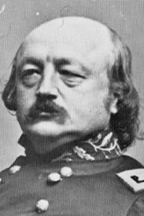

|

|

|
|
|
Lawyer, Democratic politician, and businessman, Union
General Benjamin Franklin Butler was born in New Hampshire but lived
most of his life in Massachusetts. Educated at Waterville
College in Maine, Butler joined the Massachusetts Bar in
1840. Although he practiced criminal law, Butler's real
passion was politics, and in 1853 he won a seat in the
Massachusetts State House. By 1859, he had worked his way up
to the state senate as a Democrat. To support himself,
Butler also operated a mill in Lowell, Massachusetts,
producing wool cloth.
Although Butler was a northerner, he hoped a moderate
southern President could avoid sectional strife.
Disappointed when war erupted, he stoutly declared himself
100% behind the Union. Butler was appointed brigadier
general in the Massachusetts Volunteers. For his service in
helping to stop the Baltimore disturbances in spring of 1861
he was promoted to major general. Overall, Butler was valued
far more for his political skills than his military talents.
In command and in battle, Butler proved to be one of the
worst of the so-called "political generals," those men whose
high army appointments were owed entirely to their ability
to marshal support and votes for the government.
Stationed at Fortress Monroe, Virginia, Butler first came
to the nation's attention when he declared fleeing slaves
"contraband of war." This circumvented federal authority and
antagonized slaveholders in both rebel states, and
border-states like Maryland. Butler's unpopularity with
southern civilians grew during his administration of
Louisiana as military governor in 1862. During this time,
Butler issued his infamous order that forced Confederate
women to treat Union soldiers with respect or to suffer
severe penalties.
Although Butler's supporters considered his
administration able, he was accused of corruption and even
theft by locals, who said "Spoons" Butler, had stolen
silverware from the confiscated home in which he lived. Many
generals were dismissed or demoted for displaying such
breathtaking incompetence. Butler, however, was a wily and
popular figure from an important state. Lincoln could not
afford to offend him, especially since Butler switched his
allegiance to the Republican Party in 1862.
Butler emerged as a champion of the use of
African-American soldiers, and while in New Orleans, raised
the Louisiana Native Guard, one of the first two black units
to fight in the Union Army. Removed from the Crescent City
in early 1863, Butler was placed in charge of the Department
of Virginia and North Carolina. In 1864 he led the newly
formed Army of the James in the campaign to take Richmond,
where his battlefield fiascos led to his retirement,
courtesy of General Ulysses S. Grant. Butler resigned his
commission on November 30, 1865.
During Reconstruction, Congressman Butler joined the
Radical Republicans and worked for the impeachment of
President Andrew Johnson. He also worked to guarantee the
political rights and personal safety of African-Americans,
including lending his strong support for the Civil Rights
Act of 1875.
Butler served as Massachusetts Governor from 1882 until
1884. Always a champion of the working masses, he was
nominated for President by the People's Party on an
anti-monopoly platform. Butler's personal and political
tactics remained controversial, and he was widely despised
his documented corrupt practices. Nevertheless, in spite of
his incompetence on the battlefield and his vain and
arrogant demeanor, he was a devoted public servant. He
helped to secure a number of important reforms, including
much of the progressive race laws of Reconstruction.
Benjamin Butler died on January 11, 1893 in Washington, D.C.
Source: Joan Waugh, ed., Facts on File Encyclopedia of American
History: Civil War and Reconstruction, 1856 to 1869 (New York: Facts on
File, 2003), 46-47.
|